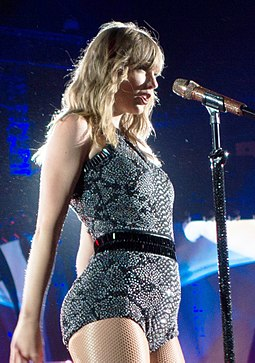

Taylor Alison Swift (born December 13, 1989) is an American singer-songwriter. She is known for her narrative songwriting, which often centers around her personal life and has received widespread media coverage and critical praise. At age 14, Swift became the youngest artist signed by the Sony/ATV Music publishing house and, at age 15, she signed her first record deal. Her 2006 eponymous debut album was the longest-charting album of the 2000s in the US. Its third single, "Our Song", made her the youngest person to single-handedly write and perform a number-one song on the Billboard Hot Country Songs chart. Swift's second album, Fearless, was released in 2008. Buoyed by the pop crossover success of the singles "Love Story" and "You Belong with Me", it became the US' best-selling album of 2009, won four Grammy Awards—including the Album of the Year—and was certified Diamond by the RIAA.
Swift's self-written third album Speak Now (2010) and fourth album Red (2012) both sold over a million copies in their first weeks in the US, and the latter yielded her first Billboard Hot 100 number-one single, "We Are Never Ever Getting Back Together". Her fifth album and first all-pop project, 1989 (2014), won three Grammy Awards, including the Album of the Year, and produced the number-one singles "Shake It Off" and "Blank Space", making Swift the first woman to win Album of the Year twice as lead artist and the first woman to replace herself at the top spot on the Hot 100. Her sixth album, Reputation (2017), made her the only act to have four consecutive albums each sell one million copies in their first week in the US and yielded her fifth number-one song on the Hot 100, "Look What You Made Me Do". With her seventh album, Lover (2019), Swift became the first woman in U.S. history to have six albums sell over 500,000 copies in their opening weeks. Having sold more than 50 million albums and 150 million singles globally, Swift is one of the world's best-selling music artists of all time, the highest-earning female musician of the 2010s, and among the most successful touring acts in history. Her accolades include 10 Grammy Awards, an Emmy Award, and six Guinness world records; she is the most-awarded act and woman at the American Music Awards (29 wins) and Billboard Music Awards (23 wins), respectively. She has been included in multiple power rankings, such as Time's annual list of the 100 most influential people in the world (2010, 2015 and 2019), Rolling Stone's 100 Greatest Songwriters of All Time (2015), the Forbes Celebrity 100 (placing first in 2016 and 2019), and Billboard's Greatest of All Time Artists Chart (2019). She was also named Global Recording Artist of the Year twice by the International Federation of the Phonographic Industry (2014 and 2019), Woman of the Decade (2019) by Billboard and the Artist of the Decade (2019) by the American Music Awards.